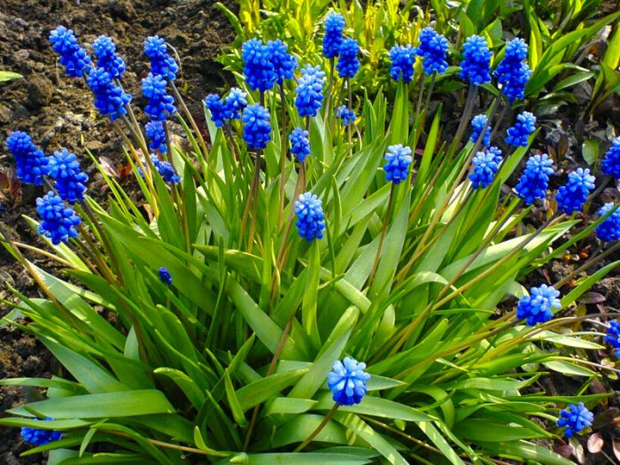

 Muscari is a genus of perennial bulbous plants native to Eurasia that produce spikes of dense, most commonly blue, urn-shaped flowers resembling bunches of grapes in the spring. The common name for the genus is grape hyacinth (a name which is also used for the related genera Leopoldia and Pseudomuscari, which were formerly included in Muscari), but they should not be confused with hyacinths. A number of species of Muscari are used as ornamental garden plants.